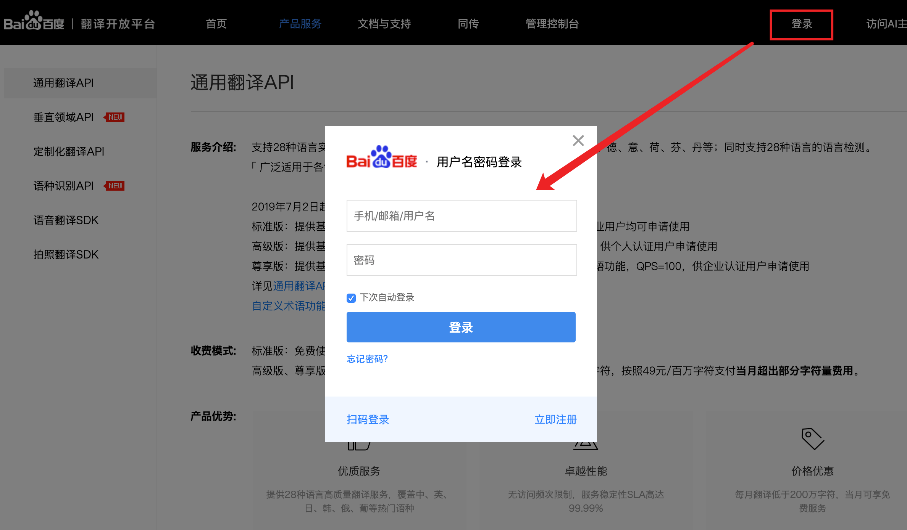
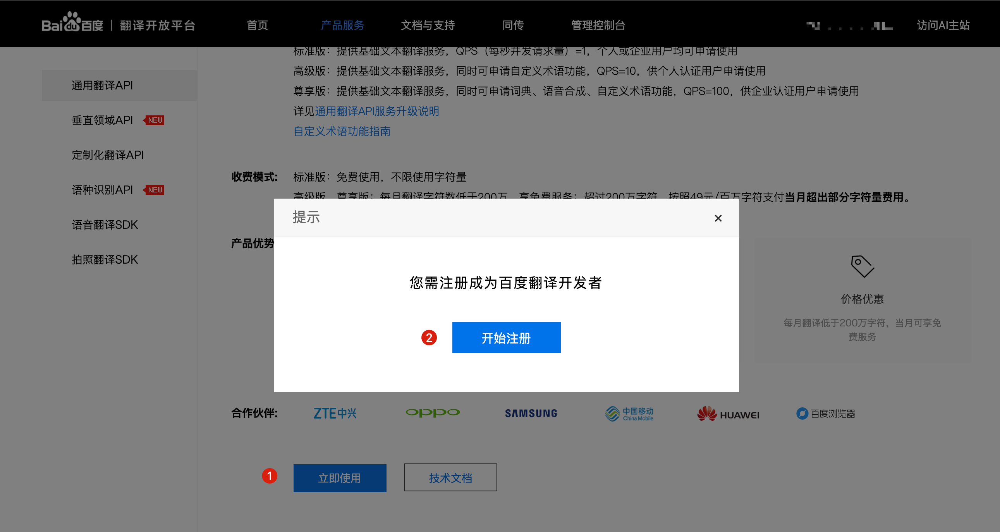
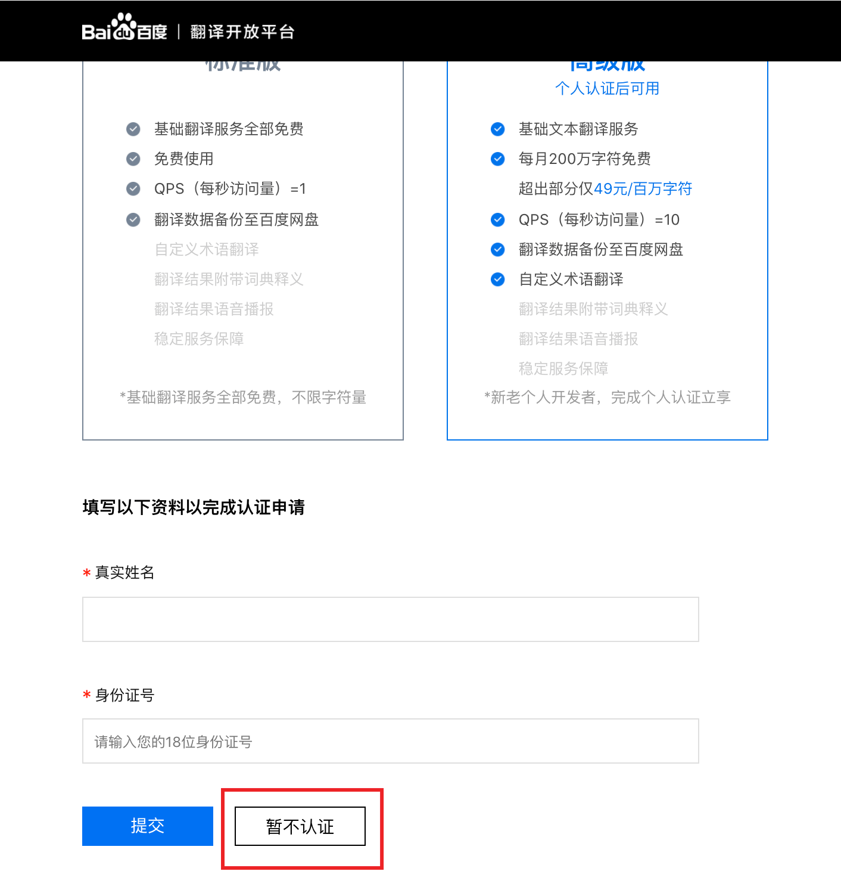
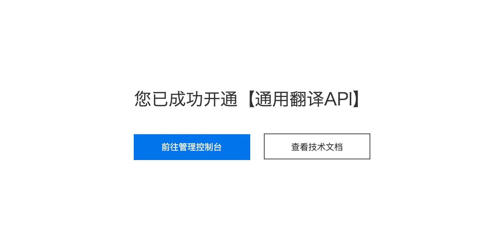
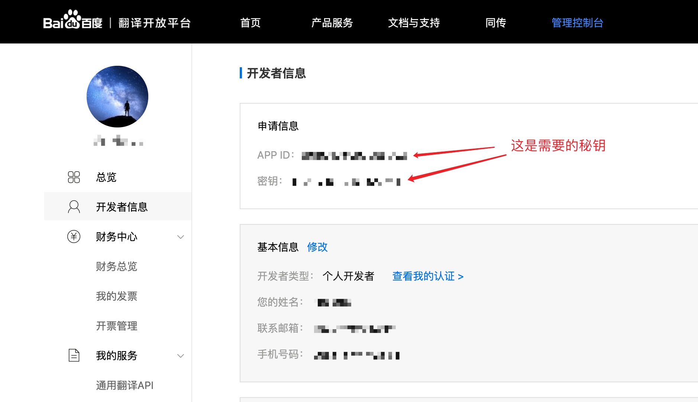

免责声明以下信息仅供参考，请以服务商官网最新信息为准。更新时间：2020年4月27日。
0. 收费模式
| 服务 | 免费额度 | 超出免费额度 | 并发请求数 |
|---|---|---|---|
| 通用翻译API（标准版） | 完全免费，无限使用 👍 | 1次/秒 | |
| 通用翻译API（高级版） | 每月200万字符 | 49元/100万字符 | 10次/秒 |
| 通用翻译API（尊享版） | 每月200万字符 | 49元/100万字符 | 100次/秒 |
1. 注册登录

2. 注册开发者
登录完成之后，点击 该网页 下方的「立即使用」按钮，然后点击「开始注册」

接下来填写个人信息，请如实填写，完成之后点击「下一步」

如果你准备使用标准版，直接点击「暂不认证」即可；如果想使用高级版，需填写真实的姓名以及身份证号进行认证

看到这个提示就代表注册开发者成功了，这个时候直接点击「开通服务」

3. 开通通用翻译API
注册完成开发者之后，点击「开通服务」即可进入开通服务页面，如果刚才忘了点击，可以 点击此处跳转开通服务页面
选中「通用翻译API」，然后点击「下一步」

点击「开通标准版」（如果你想使用「高级版」，也可以点击「开通高级版」，不过你需要填写身份证进行认证）

填写应用名称，可以随意填写，其他的不用填。然后勾选「我已知晓翻译API计费规则」，点击「我已了解，确认开通」

当你看到如下提示则代表开通成功了

4. 获取秘钥

5. 填写秘钥
在翻译引擎管理页面，点击「百度翻译」的「设置秘钥」，然后将刚才获取到的秘钥填写到对应位置即可。